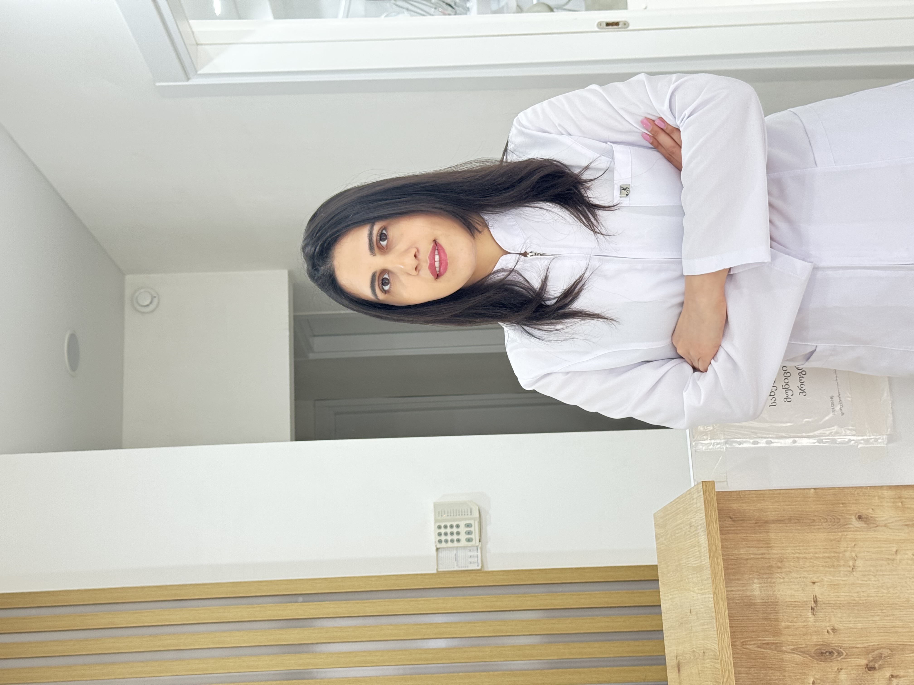
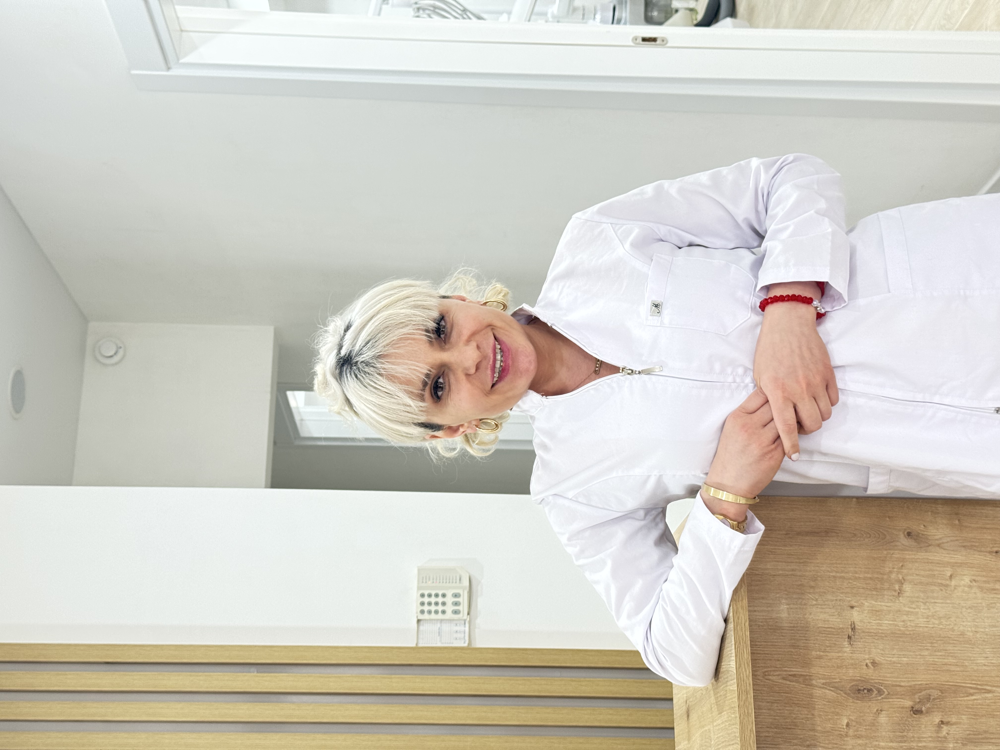
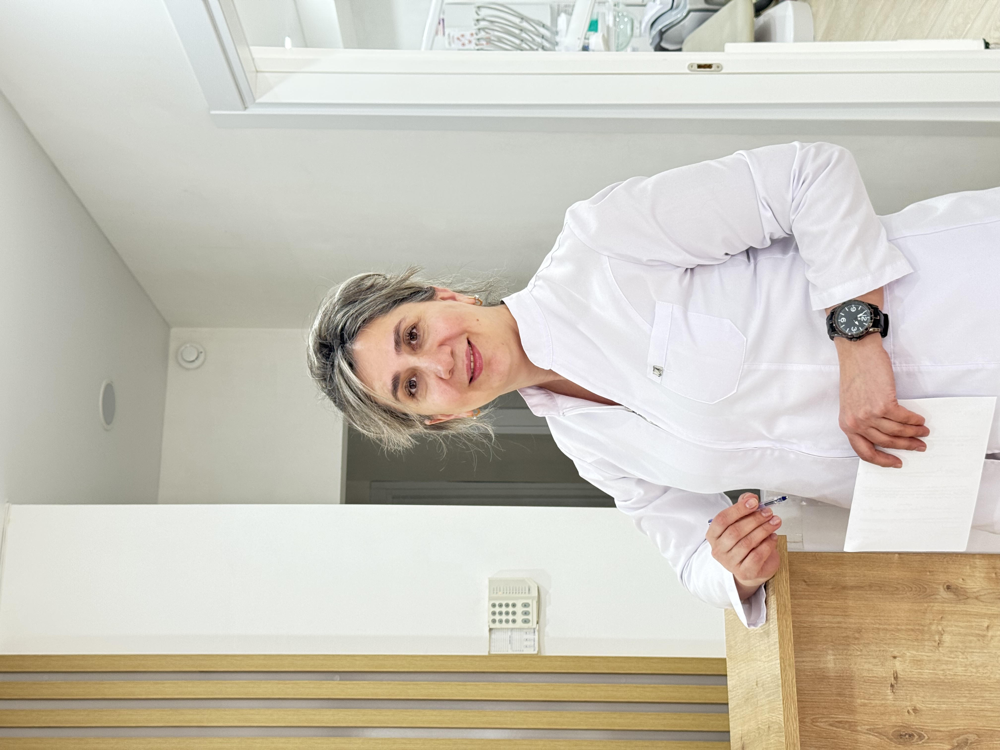
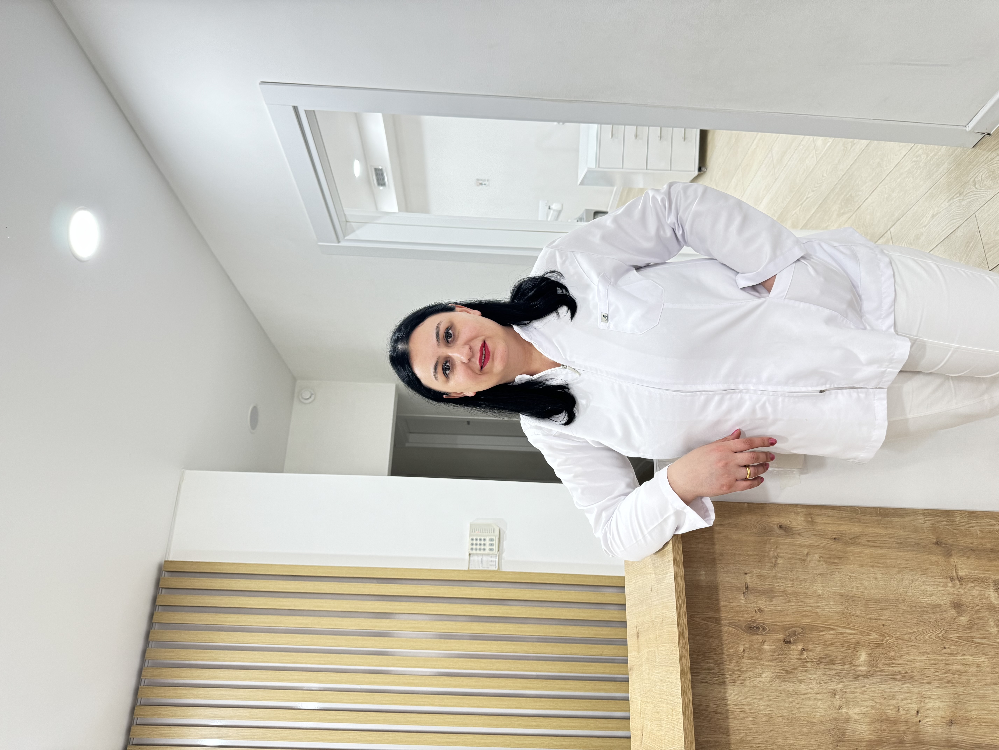

გაიცანით ჩვენი ექიმები
ეთერ კარელიძე
კლინიკის ხელმძღვანელი, თერაპიული სტომატოლოგია
მარიკა თოდუა
თერაპიული სტომატოლოგია, ბავშვთა სტომატოლოგია, ქირურგიული სტომატოლოგია

ნინო ჭელიძე
ორთოდონტიული სტომატოლოგია

შორენა ხონელიძ
თერაპიული სტომატოლოგია, ბავშვთა სტომატოლოგია, ქირურგიული სტომატოლოგია
სალომე კუბლაშვილი
თერაპიული სტომატოლოგია, ბავშვთა სტომატოლოგია

ნატალია მახალობლიძე
თერაპიული სტომატოლოგია, ბავშვთა სტომატოლოგია, ქირურგიული სტომატოლოგია

მარი ცერცვაძე
თერაპიული სტომატოლოგია, ბავშვთა სტომატოლოგია, ქირურგიული სტომატოლოგია